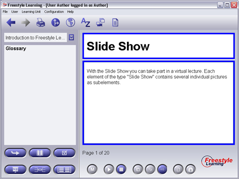
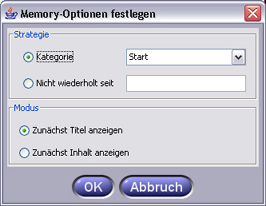

Besides the representation of concepts the Glossary view offers the possibility of deepening single elements in the way of a word training. Therefore you have to activate the Memory Mode. In the context of a Memory meeting your selected elements can be presented in two ways. You can choose, if the presentation of the element starts with hiding the name or the content, which can be exposed by a click on the “Uncover” button. After that you can move the respective elements in several Memory categories to realize an individual learning strategy.

To carry out a Memory meeting, at first you change into the Memory mode by clicking the “Memory”-Button. You can then start with the meeting by operating the "Start"-Button. In the upcoming dialog you can set your individual studying strategy. Therefore you can repeat a Memory run in four different categories (“Start”, “Light”, “Medium”, “Premium” - sorted by level of difficulty). Alternatively you can study elements, which are not repeated since a date to be indicated. Therefore you have to set the date in the Memory dialog. Select “OK” to start the memory meeting.

In der Sitzung wird Ihnen jeweils zuerst entweder der Titel oder der Inhalt präsentiert. Als Lerner haben Sie jetzt die Möglichkeit, zu überlegen, was hinter dem aktuell verdeckten Bereich liegt. Durch Betätigen der "Aufdecken"-Schaltfläche wird der Inhalt des verdeckten Bereichs aufgelöst. Um den aktuellen Durchlauf abzuschließen, müssen Sie jetzt ihren Lernerfolg im System protokollieren. Dabei haben Sie die Möglichkeit, das aufgedeckte Element in eine fortgeschrittene Kategorie zu verschieben, es in der aktuellen zu belassen oder es wieder in einer einfacheren einzuordnen.
Nachdem alle Elemente der aktuellen Sitzung angezeigt wurden, bekommen Sie eine Statistik angezeigt. Durch betätigen der "Stop"-Schaltfläche wird die Memory-Sitzung abgeschlossen. Zusätzlich können Sie mit der "Stop"-Schaltfläche auch jederzeit während eines Durchlaufs abbrechen.
Hinweis: Es findet keine Lernkontrolle durch den Memory-Manager statt! Ob sie eine Zuordnung gewusst haben oder nicht, bestätigen manuell durch Zuordnung zu den entsprechenden Kategorien.
Kategorien-Zuordnung
| Aufdecken | Deckt die nicht sichtbare Fläche des aktuellen Elements auf | |
| Aufwärts | Bewegt das aktuell bearbeitete Element eine Kategorie nach oben | |
| Belassen | Belässt das aktuell bearbeitete Element in der ursprünglichen Kategorie | |
| Abwärts | Bewegt das aktuell bearbeitete Element eine Kategorie nach unten |
Back to Main Help Page